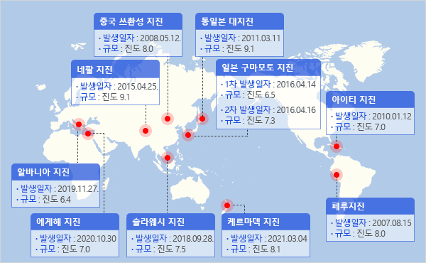
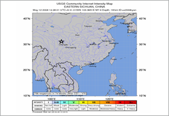
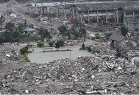
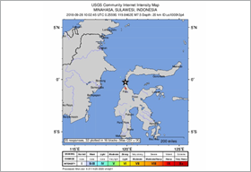
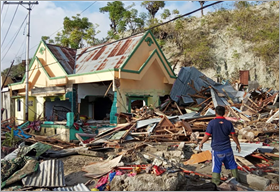

@@include('inc/breadcrumb.html')
@@include('inc/footer.html')
국외 지진피해 사례
국외 주요 지진

- 일본
- 구마모토
- 스촨성
- 슬라웨시
- 네팔
- 알바니아
- 에게해
- 케르마덱
- 페루
- 아이티
국외 주요 지진 진도값
-
동일본 대지진
Ⅶ -
일본 구마모토 지진
Ⅶ -
중국 쓰촨성 지진
Ⅶ -
슬라웨시 지진
Ⅶ -
네팔 지진
Ⅶ -
알바니아 지진
Ⅶ -
에게해 지진
Ⅶ -
케르마덱 지진
Ⅶ -
페루 지진
Ⅶ -
아이티 지진
Ⅶ
-
동일본 대지진
- 발생시각
- 2011.03.11. 14:46
- 위치
- 산리쿠 해역
(북위 38.1도, 동경 142.9도, 오시카반도의 동남동 130㎞부근) - 규모
- Mw 9.0
- 깊이
- 24㎞
- 최대진도
- Ⅶ
-
주요 피해사례
- 인명피해
- 사망 19,533명, 실종 2,585명, 부상 6,230명
- 재산피해
- 전파 121,768채, 반파 280,160채, 일부 파손 744,396채
- 기타피해
- 지진해일로 인한 전원공급 중지로 후쿠시마현의 원자력발전소에서 방사능 누출 사고 발생
-

[지진해일 발생]
출처: 행정안전부,2018,2017 포항지진 백서, p.456 -

[산업시설 피해]
출처: 행정안전부,2018,2017 포항지진 백서, p.456
-
관련자료
-
일본 구마모토지진
- 발생시각
- ① 2016.04.14. 21:26
② 2016.04.16. 01:25 (해일주의보 01:27~02:14) - 위치
- 구마모토현 구마모토지방
(북위 32도 45.2분, 동경 130도 45.7분) - 규모
- ① M 6.5 ② M 7.3
- 깊이
- ① 12㎞ ② 11㎞
- 최대진도
- Ⅶ
-
주요 피해사례
- 인명피해
- 사망 225명, 부상 2,753명
- 재산피해
- 전파 8,697채, 반파 34,037채, 일부 파손 155,902채
- 기타피해
- 토석류 및 산사태 발생, 하천 제방 피해, 가스 공급 정지(10만5천호) 및 단수(44만 5857호)
-
관련자료

-
중국 쓰촨성 지진
- 발생시각
- 2008.05.12. 14:28
- 위치
- 중국 쓰촨성 지방
(북위 31.11도, 동경 103.33도, 중국 청두 북서쪽 90km 지점) - 규모
- M 8.0
- 깊이
- 10㎞
-
주요 피해사례
- 인명피해
- 사망 68,109명, 부상 364,552명, 실종 19,851명
- 재산피해
- 붕괴 500,000채 이상 (도시기능 상실)
- 기타피해
- 간선도로 등 교통마피 및 통신두절, 청두공항 폐쇄발전소 5곳과 변전소 6곳 붕괴(쓰촨성) 등
-

[USGS COMMUNITY INTERNET INTENSITY MAP]
출처: USGS -

[중국 쓰촨 주택붕괴 전경]
출처 : 행정안전부, 2018, 2017 포항지진 백서, p.344
-
관련자료
-
2018 술라웨시 지진
- 발생시각
- 2018.09.28
- 위치
- 인도네시아 술라웨시섬
(남위 0.18도, 동경 119.84도) - 규모
- Mw 7.5
- 깊이
- 10㎞
- 최대진도
- Ⅸ
-
주요 피해사례
- 인명피해
- 사망 2,256명, 부상 10,679명, 실종 1,075명 이상
- 재산피해
- 팔루 공항 관제탑 파손, 활주로에 400~500m 균열, 5개 발전소 가동 중단
- 기타피해
- 지진 및 쓰나미로 인해 일부 주택 유실, 사망자는 대부분 쓰나미에 의해 발생
-

[USGS COMMUNITY INTERNET INTENSITY MAP]
출처: USGS -

[중국 쓰촨 주택붕괴 전경]
출처 : 행정안전부, 2018, 2017 포항지진 백서, p.344
-
관련자료